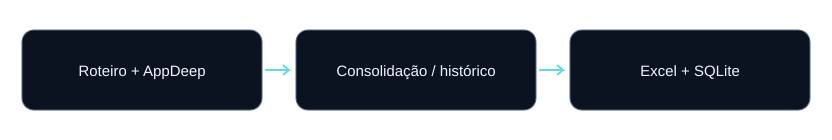

Integração e qualidade
ETL de Esgoto
Duas fontes, um cadastro confiável: prioridade por data e hora, histórico de visitas e fotos normalizadas.
O problema
Roteiro e AppDeep representam fontes com datas, acumulados e registros repetidos diferentes. A consolidação precisa definir qual cadastro prevalece e preservar os eventos úteis para consulta.
Contribuição demonstrada
Implementação do fluxo em Python, definição das regras descritas, organização das saídas e disponibilização de documentação e testes. A versão pública oferece amostras fictícias para reprodução.
Fontes e arquitetura
Excel Roteiro, aba Planilha1; Excel AppDeep, aba Sheet1. O contrato valida campos obrigatórios, incluindo situação e horário do registro.

- Ler as duas fontes e validar abas e colunas.
- Selecionar o último registro por matrícula; usar horário no AppDeep para desempatar.
- Consolidar o cadastro, desdobrar tentativas e reunir links de fotos.
- Validar estruturas, exportar Excel e construir SQLite temporário com verificação de integridade.
Decisões de engenharia
| Decisão | Comportamento implementado |
|---|---|
| Registro principal | A data mais recente vence; em empate entre fontes, AppDeep tem prioridade. Campos vazios da fonte vencedora são preservados. |
| Visitas | Somar o acumulado do registro mais recente de cada fonte. A regra depende da hipótese de períodos independentes. |
| Duplicados | Envios AppDeep marcados como duplicados são excluídos do cadastro, das visitas, do histórico e das fotos. |
| Rastreabilidade | Registrar fonte, data de origem e, quando fornecido pela exportação, identificador e link AppDeep. |
Resultado reproduzível
Amostra inteiramente fictícia. Estes números demonstram comportamento funcional; não são métricas de produção ou benchmark de escala.
| Verificação | Resultado da amostra |
|---|---|
| base_consolidada | 3 matrículas |
| historico_visitas | 4 eventos |
| fotos_normalizadas | 3 links |
| DEM1001 | 5 visitas: 2 do Roteiro + 3 do AppDeep |
Como foi validado
A suíte possui oito testes, incluindo acumulados mais recentes, status, desempates, exclusão de duplicados, tentativas e execução completa com arquivos fictícios.
Referência: validação de 13/10/2026. Consulte o README para execução e o GitHub Actions para o status mais recente.
Limitações e próximos passos
Excel e SQLite não são promovidos como uma transação única. O banco é verificado antes da substituição, mas uma falha entre exportações pode deixar versões diferentes. O exemplo pequeno não comprova desempenho em grande volume.
Uma evolução deve ser implementada e testada antes de ser apresentada como funcionalidade concluída.